关于js中有些时候调用函数不加括号，有些时候需要加上括号的原因解释
使用js之前，要理解，everything is object ，任何东西都是对象，所以function也是对象
function my(){}; 其实就是生成了一个名字叫做my的对象，这个对象是个function对象，同时也是一个函数，它等同于var my=function(){};
他们的区别是作用域不同，前者是window级别是globar的，一些浏览器认为是window对象下面的my属性。后者是当前作用域下的my对象
一般在my后面加上() 认为是执行这个function对象中的内容，并且能够得到返回值。
由此得知
var my1=my; //其实就是吧my对象赋值给my1 my1是个function对象。 var my1=my(); //先执行my对象映射的函数，然后把执行结果(return关键字返回，如果没有返回值，那么my1就是undefined
说白了就是：函数也是一个对象，无论是
function my() {}; 声明 还是 let my = function() {}; 声明，my都是一个函数对象
如果需要执行函数，那么就是 my
如果需要执行函数并且结果得到，那么就是 my() 此时的内容是返回的值，而不再是my对象。执行了函数后将结果返回，如果没有返回值那么就是undefined。
例如 setTimeout中，第一个参数是函数对象，也就是需要执行的函数对象是哪一个，而不是函数对象执行后的结果
setTimeout(callback, 2000);
setTimeout('callback()', 2000);
JavaScript中任何事务都是对象。元素、函数、属性等等。
WebApi简介
简单来说，js的基础语法是通用的，但是做不了所有的网页交互效果，所以一些网页交互效果是由w3c的标准实现，而操作一个文档最重要的便是 DOM 和 BOM。
DOM文档对象，如果想要操作文档中的某些元素，那么一定是对DOM进行操作的。BOM浏览器对象，如果想要当前的页面跳转其他的页面，那么就是对浏览器对象进行操作，更多的如：网页的爬虫中，一些爬取效果就是通过模拟人的操作对浏览器进行操作。

Api
Api就是一个接口，通过这个接口能够在不了解原理的情况下实现一部分的功能，Api是一个统称，例如手机的充电器接口是一个接口，同时一些程序也会提供一部分接口方便其他程序的调用。所以Api理解就是：不了解内部原理的情况下，能够完成一部分的功能。
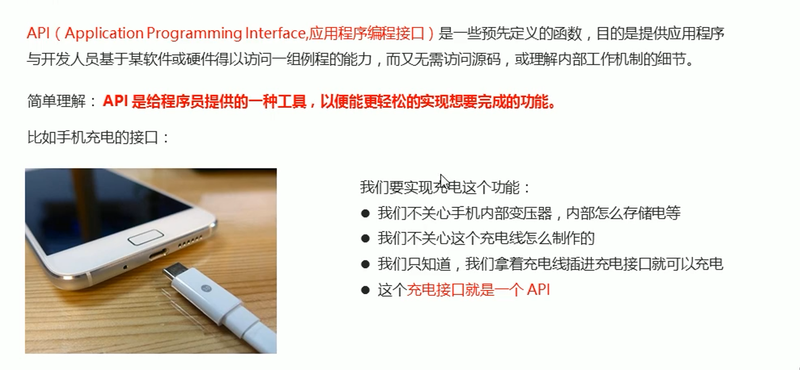
WebApi

总结

DOM
DOM简介
实际上是一个接口，通过这个接口，可以对文档内的元素进行操作，包括增加，修改，删除和查询等。操作元素是DOM的核心内容。

DOM树

获取DOM树中的元素
既然通过DOM接口，可以对文档中的元素进行增删改查四种操作，那么首先需要获取到文档中的元素。DOM提供了一下具体接口来实现。

根据ID获取
根据标签名获取
根据HTML5新增的方法获取
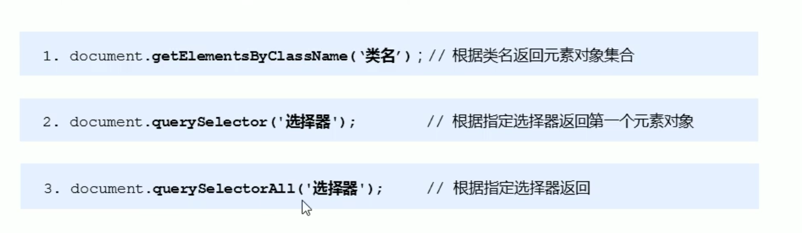
特殊元素获取
打印元素对象
1consloe.dir(document.getElementById(ID)); // 能够得到元素的对象，包括详细的属性特殊 获取HTML元素和BODY元素

事件基础
事件是由事件三要素组成的：1. 事件源 2. 事件类型 3. 事件处理程序
- 事件源 ：也就是事件对象，元素对象
- 事件类型： 类似点击鼠标或者鼠标经过等
- 事件处理程序：通过函数处理一部分动作
修改元素内容

innerText是老版本的IE发起的函数接口，所以火狐的低版本可能不支持。而innerHTML是W3C的标准，所有的浏览器都支持。也最常使用。同时innerText不识别原有内部的标签，即使 写成了 innerText = "<strong>我是：</strong> + 谁" 那么浏览器的识别也是同样的包括标签；而 innerHTML = "<strong>我是：</strong> + 谁" 浏览器则会有加粗效果。
修改元素的基本属性
只要是js中的事件发生，那么一定要是三个步骤
- 获取事件源 也就是获取元素对象
- 注册时间 也就是事件是什么类型给，是点击还是鼠标移动经过
- 事件处理函数 即 事件的处理流程是怎么样的。
案例
不同时间的问候语 1. 获取事件源 2. 注册事件 3. 事件处理函数，修改元素里面的placholder等等基本属性。注意这不是style属性。
表单元素
表单元素的修改不能使用innerHTML，应为表单元素是特殊的，直接使用属性 input.value = ""
修改元素的style样式属性
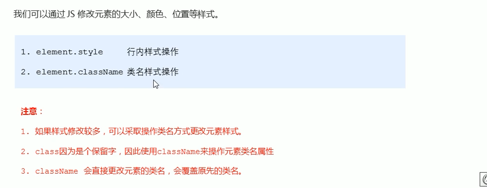
如果要修改的样式比较少，那么直接使用 object.style即可，如果要修改的样式较为复杂，那么使用object.className，注意这里的className会覆盖原有的class，所以如果需要添加以前的class，先获取，然后添加即可。
语法：object.style.样式 css中的横线（-）取消，并且横线后的第一个字母大写，此时的style样式就是js中的写法。
background-color 变为了 backgroundColor
案例
密码框的变换效果，任何事件都是按照三要素来进行的 1.获取时间，事件注册 事件处理程序
案例
淘宝二维码的关闭 元素的显示与隐藏，也是通过style属性来设置的

xxxxxxxxxx571<html lang="zh-CN">3<head>4 <meta charset="UTF-8">5 <meta http-equiv="X-UA-Compatible" content="IE=edge">6 <meta name="viewport" content="width=device-width, initial-scale=1.0">7 <title>Document</title>8 <style>9 .box {10 position: relative;11 width: 300px;12 margin: 100px auto;13 border-bottom: 1px solid #ccc;14 }15 .box input {16 width: 270px;17 height: 30px;18 border: 0;19 outline: none;20 }21 .box span {22 position: absolute;23 top: 0%;24 right: 0%;25 display: inline-block;26 width: 24px;27 height: 24px;28 /* background-color: pink; */29 background: url(passwords-demo/close.png);30 background-size: 24px auto;31 }32 </style>33</head>34<body>35 <div class="box">36 <input type="password" id="pwd" >37 <span id="eye"></span>38 </div>39 <script>40 let eye = document.getElementById('eye');41 let pwd = document.getElementById('pwd');42 43 let flag = true;44 eye.onclick = function() {45 if (flag) {46 eye.style.backgroundImage = "url(passwords-demo/open.png)";47 // eye.style.backgroundSize = "24px auto"48 pwd.type = "text";49 }else {50 eye.style.backgroundImage = "url(passwords-demo/close.png)";51 pwd.type = "password";52 }53 flag = !flag;54 }55 </script>56</body>57</html>案例
实现placeholder，即得到焦点去掉placeholder，失去焦点重新显示文字。
onfocusonblur
总结
- 关于鼠标的事件
- 关于键盘的事件
- 点击的事件
- 等等
操作元素是DOM的核心内容，并且这些元素的属性是可读写的，即能够取值和赋值，当然可以设置元素的内容或者属性是只读的。
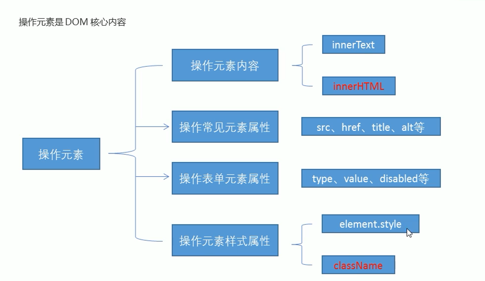
案例


x1<html lang="zh-CN">34 <head>5 <meta charset="UTF-8">6 <meta http-equiv="X-UA-Compatible" content="IE=edge">7 <meta name="viewport" content="width=device-width, initial-scale=1.0">8 <title>Document</title>9 </head>1011 <body>12 <button id="btn">开关</button>13 <script>14 let btn = document.getElementById('btn');15 let body = document.body;16 let flag = true;17 btn.onclick = function () {18 body.style.backgroundColor = flag ? "black" : "#ffffff";19 flag = !flag;20 }21 </script>22 </body>2324</html>实现百度的换肤效果

代码
xxxxxxxxxx551<html lang="zh-CN">3<head>4 <meta charset="UTF-8">5 <meta http-equiv="X-UA-Compatible" content="IE=edge">6 <meta name="viewport" content="width=device-width, initial-scale=1.0">7 <title>Document</title>8 <style>9 body {10 background: url(backgroundImage/1.webp);11 background-size: 100%;12 transition: all .2s;13 }14 div {15 width: 1000px;16 height: 100px;17 margin: 100px auto;18 }19 div img {20 float: left;21 width: 200px;22 height: 100px;23 cursor: pointer;24 box-sizing: border-box;25 border: 4px solid #fff;2627 transition: all .2s;28 }29 div img:nth-child(n+1) {30 margin-left: -2px;31 }32 div img:hover {33 transform: scale(1.2);34 }35 </style>36</head>37<body>38 <div>39 <img src="backgroundImage/1.webp" alt="">40 <img src="backgroundImage/2.webp" alt="">41 <img src="backgroundImage/3.webp" alt="">42 <img src="backgroundImage/4.webp" alt="">43 <img src="backgroundImage/5.webp" alt="">44 </div>45 <script>46 let imgs = document.getElementsByTagName('img');47 let body = document.body;48 for(let i=0; i<imgs.length; i++){49 imgs[i].onmouseover = function(){50 body.style.backgroundImage = "url(backgroundImage/"+(i+1)+".webp)"51 }52 }53 </script>54</body>55</html>案例
表格中鼠标经过的行换颜色，不适用 hover
案例
表格的全选，反选等等
元素的属性的值的操作
元素的属性可以自定义，这些属性可以设置读写的操作权限
- 如果是元素原生的属性，那么使用原生的get和set方法即可
- 如果是程序员自定义的属性，那么使用getAttribute和setAttribute方法即可
获取属性值

设置属性值
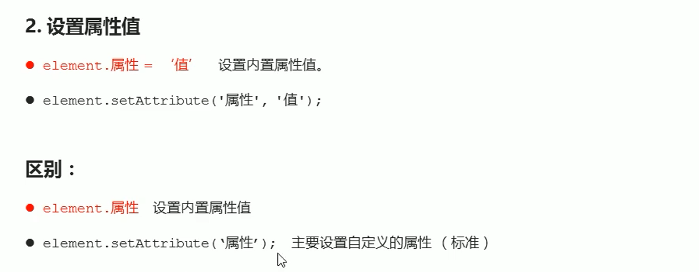
案例
tab栏的切换模块，品优购的tab栏切换

自定义属性
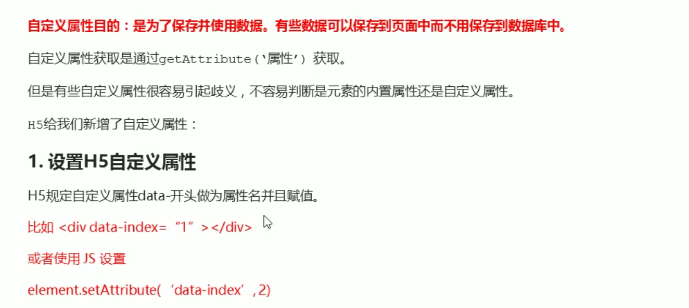

如果出现了比较长的自定义属性，如 data-list-nane那么使用第二种属性获取时，应该使用的时驼峰命名法来写，如 listName
节点操作
元素节点的类型可以通过 notetype属性得到。
节点简介

操作方法

节点

实际开发中，因为childNodes获取的是所有的子节点，包括文本、元素等，如果只需要元素节点，那么还需要进一步的处理，显得比较麻烦，所以一般情况下使用的是children这个非标准的属性来做，虽然是非标准的属性，但是得到了各个浏览器的支持，所以放心使用即可。
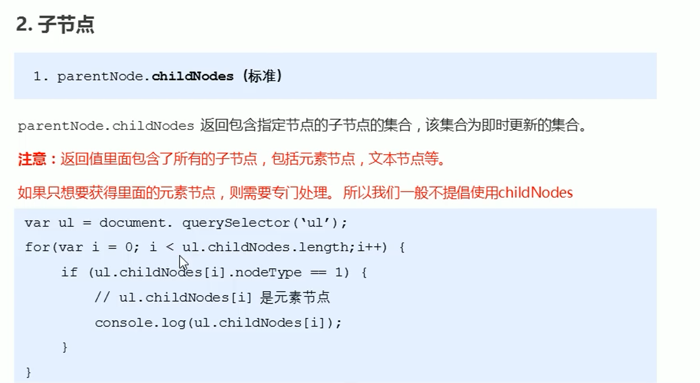

返回的是第一个节点

返回的是第一个元素节点
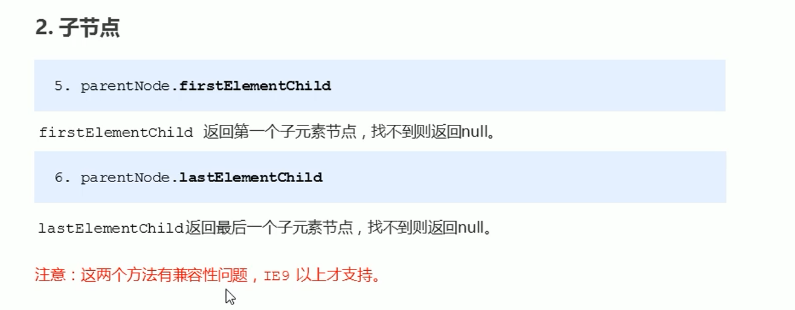
如果想要没有兼容性的问题
那么使用children即可
xxxxxxxxxx41ul.children 得到的是伪数组2通过索引即可得到第一个元素和最后一个元素3ul.children[0]4ul.children[ul.children.length - 1]案例
新浪的下拉菜单
兄弟节点
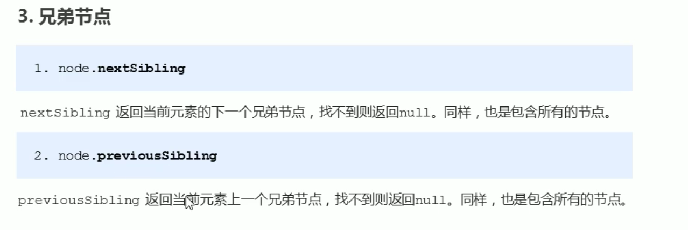
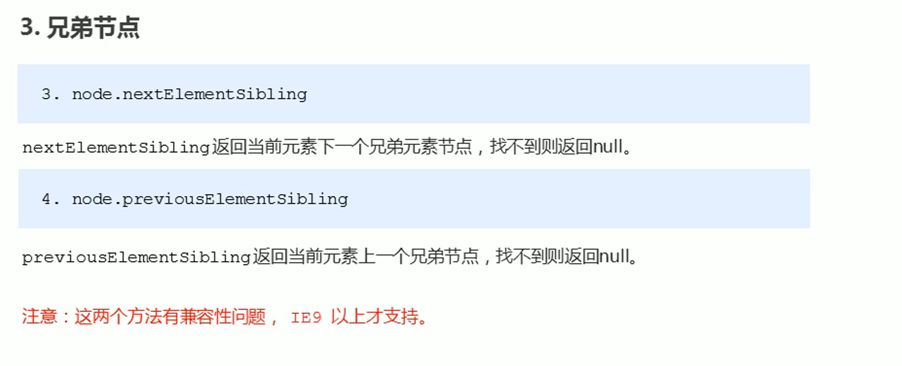

添加节点
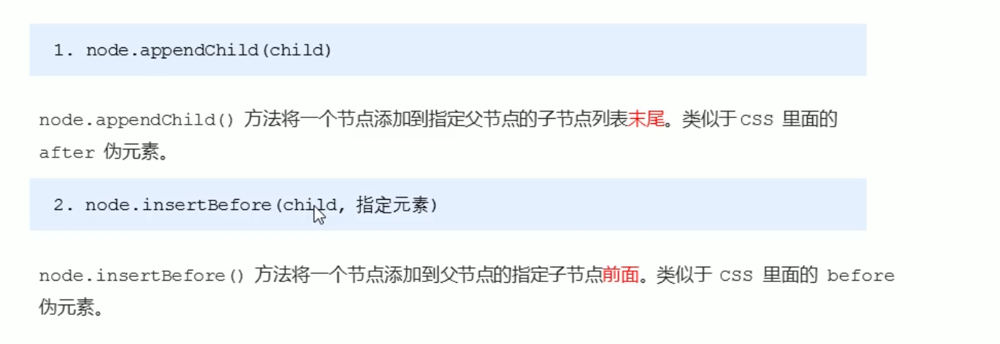
删除节点
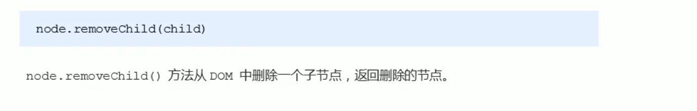
案例
留言栏的删除
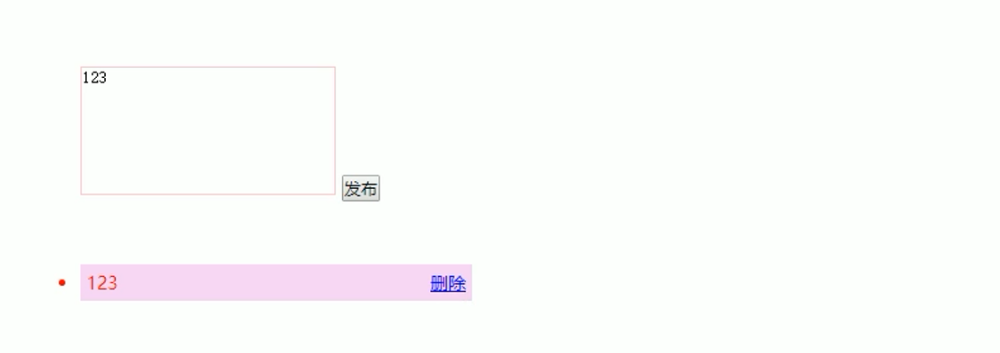
删除元素中的应用

复制节点（重点）

创建节点的效率对比
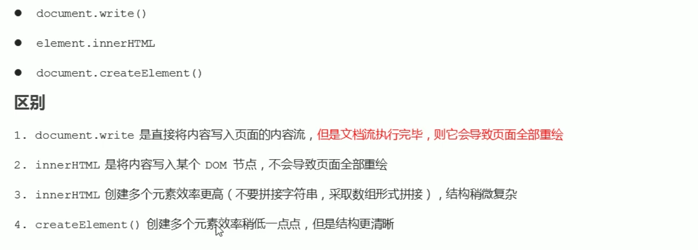
创建节点时，innerHTML如果不采用数组拼接形式，那么 效率远低于createElement，如果采用数组拼接形式，那么效率稍高于createElement。
重点核心

改
普通元素主要是通过innnerHTML来修改元素的内容
而表单元素比较特殊，需要直接使用属性进行修改属性的值

查

事件高级
注册时间概述
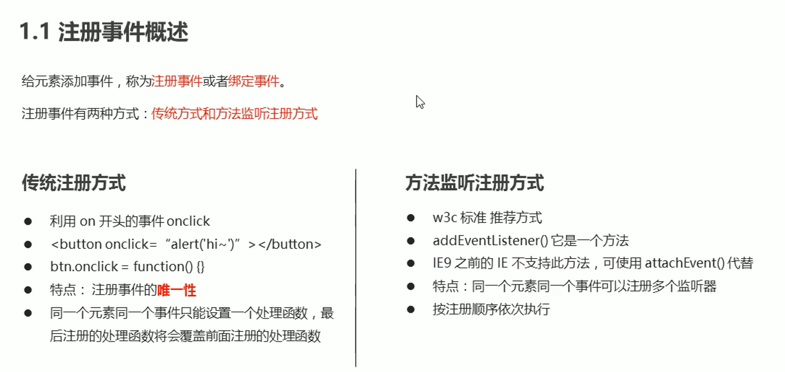
addEventListener()方法
addEventListener方法中，第一个参数是事件的类型，第二个参数是事件处理程序，相当于之前的获取事件源，直接是object.addEventListerner添加事件了，同时事件的类型以前是onclick或者onmousemove等等去掉了on，直接使用即可。同时addEventListrener方法对于同一个元素同一对象可以添加多个事件处理函数，事件处理的过程是按照事件的编写顺序依次执行的。
ul.addEventListener('click',funccion(){事件处理函数过程})

不需要了解

兼容性的函数

移除事件
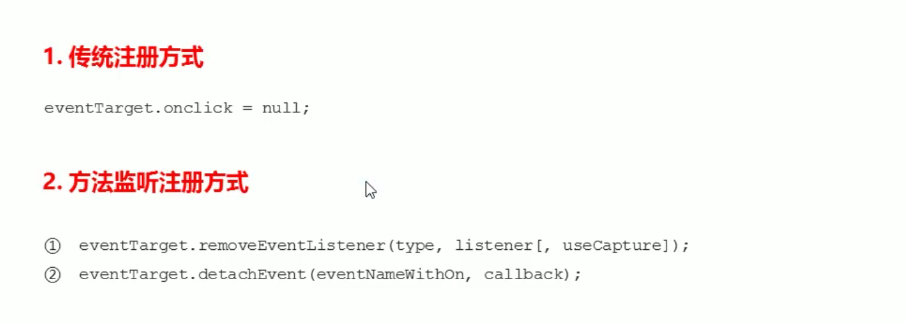
在开发中，只要不需要兼容IE等古老浏览器，尽量使用新的特性。
DOM事件流 非常重要
简单来说
- 事件捕获是石头沉下水的过程，从高级一直底下挨揍，一直到最后的过程
- 事件的冒泡就是水泡网上浮的过程，从底下一直往上走的过程
- 事件的捕获和冒泡就是延续的过程，从上到下，从下到上的过程。
事件的捕获过程是 addEventListener中的第三个参数为true
事件的冒泡过程是 addEventListener中的第三个参数为false或者省略


注意
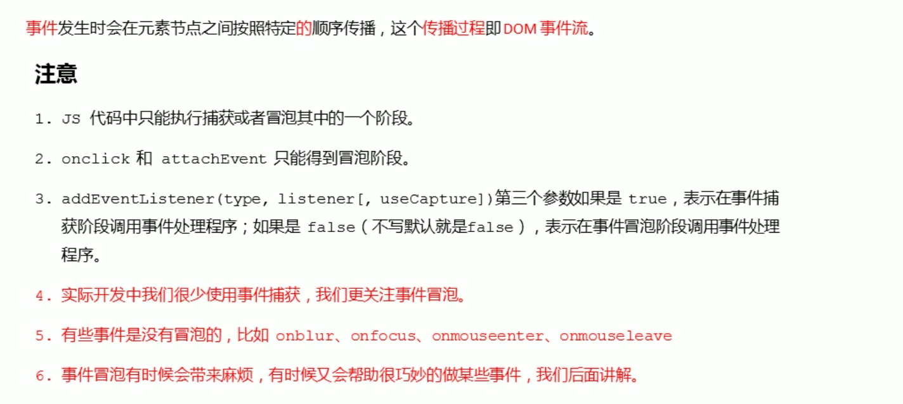
事件对象
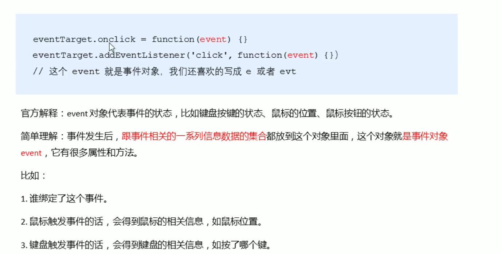
事件对象只需要一个形参即可，事件对象是系统自动创建的，不需要手动创建。
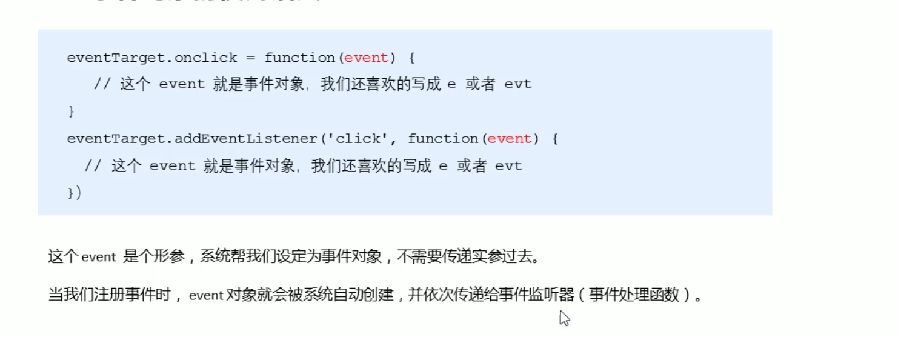
注意
触发事件对象event和绑定事件的this不一样
xxxxxxxxxx201let ul = document.querySelector('ul');2ul.addEventListener('click', function(e) {3 consolte.log(this);4 console.log(e.event);5})67虽然两个都是事件，如果点击的是 ul中的 li 那么绑定的事件this肯定会触发，也就是this是ul8但是如果点击的是li，那么事件触发的对象就是li，也就是e就是li910但是事件是会 捕获和冒泡的，所以即使点击的是li，但是ul也会出发，出发的就是绑定的事件1112这也就是事件流的由来1314按照道理，给ul绑定了事件，点击了li，li属于ul的范围内，所以ul应该要响应。15但是电脑不知道用户单纯的想要点击li还是点击ul，所以提出了事件流的概念。1617第一个是事件触发的对象，也就是谁真正的触发了事件18第二个是事件的绑定独享，由出发的事件向下捕获或者是向上冒泡出发1920关键是弄清除谁是出发对象，谁是绑定的对象。加上理解事件流的过程，那么就可以形成正确的交互效果，而不是想要点击的是ul但是只是响应了li，想要点击的是li，但是li和ul都响应了，这就是错误的响应过程，正确的响应过程是弄清楚触发的事件对象是谁，需不需要捕获和冒泡这样才能形成正确的交互效果。

事件委托 非常重要
在传统的事件监听中，如果需要给ul中的li添加事件监听，完成一部分功能，采取的措施是使用循环给每一个li都添加上事件监听的函数功能，但是如果li的个数越来越多，那么此时的响应就会越来越慢，说到底是这样的效率太低了，那么有什么高效的方法吗？这就是事件委托的由来，事件委托也称你为事件代理，在JQuery中称为事件委派。

综合使用event.target和事件委托会使程序的效率大大提高，所以在开发中，常见的是点击的对象不绑定事件，但是通过event.target来进行某一部分功能的实现，而相同的事件处理函数就交给父级，利用事件的冒泡。
如：所有的li点击后都有类似的响应过程，如果给每一个li都添加事件函数，那么太复杂了，利用事件的冒泡性，只需要给li的父级元素添加相同的事件处理函数即可，这样每个li被点击的时候都会触发父级的响应，而如果由特殊的响应，那么利用点击事件对象即可，event.target这个对象就是被点击的对象，具体到每个li。
常用的鼠标事件

有趣的鼠标事件，复制粘贴时常见的效果

鼠标事件对象
最常使用的还是page这两个属性

案例
跟随鼠标的小天使 / 京东或者天猫的放大镜子
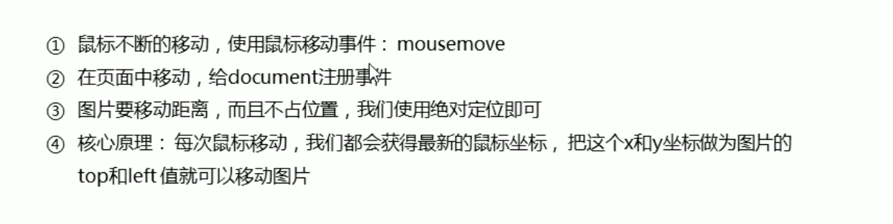

xxxxxxxxxx311<html lang="zh-CN">3<head>4 <meta charset="UTF-8">5 <meta http-equiv="X-UA-Compatible" content="IE=edge">6 <meta name="viewport" content="width=device-width, initial-scale=1.0">7 <title>Document</title>8 <style>9 .angel {10 position: absolute;11 top: 0;12 left: 0;13 width: 100px;14 height: 100px;15 background: url(angel.gif);16 background-size: 100px 100px;17 }18 </style>19</head>20<body>21 <div class="angel"></div>22 <!-- 使用固定定位或者时决定定位即可 -->23 <script>24 let angel = document.querySelector('.angel');25 document.addEventListener('mousemove', function(e) {26 angel.style.top = e.clientY + 'px';27 angel.style.left = e.clientX + 'px';28 });29 </script>30</body>31</html>
键盘事件
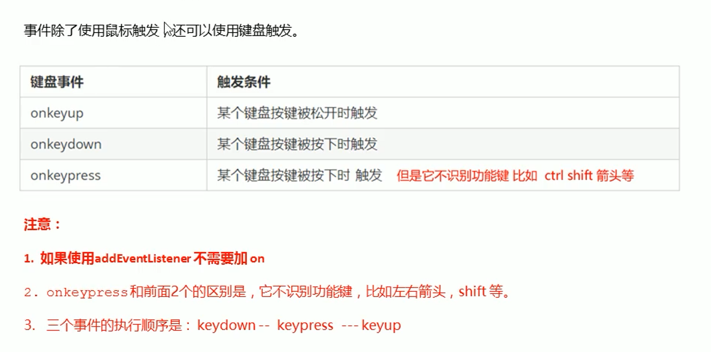
键盘事件对象
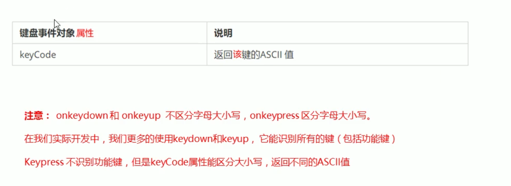
现在keycode基本已经弃用，用key来代替，key是直接显示按下的键盘是什么，按下了1就显示1，按下了a就显示a，并且是区分大小写的，常用的是keypress，功能键通过keydown监听。
BOM
BOM称为浏览器对象，是整个浏览器的集合体，包括了显示区域的DOM，文档（DOM）就是整个网页。
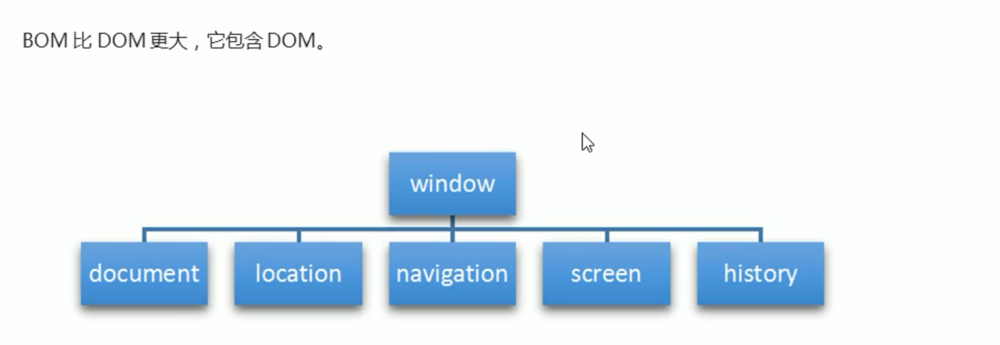

BOM对象
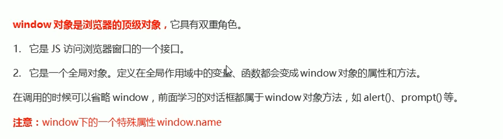
窗口事件
窗口加载

了解

窗口大小
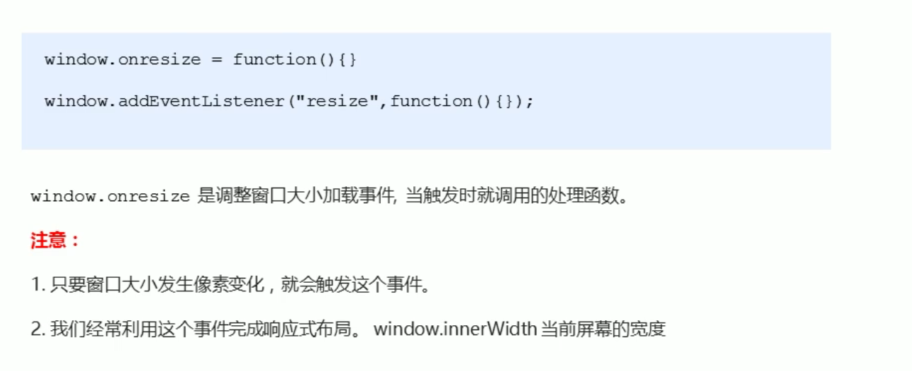
定时器

setTimeout()方法
第一个参数是执行函数对象，第二个参数是延迟多少毫秒后执行。这个函数只执行一次。并且第一个参数调用外币函数时，不需要写括号，如果写了括号，那么会立刻执行被调用的函数。这个定时器相当于定时炸弹，炸完了就没有了，只执行一次。
setTimeout(callback, 2000) 或者是 setTimeout('callback()', 2000);
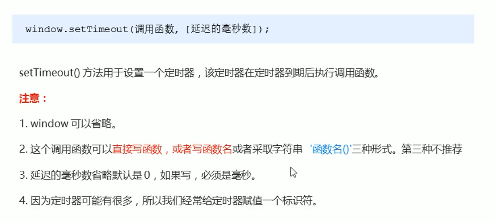
回调函数：回头调用函数
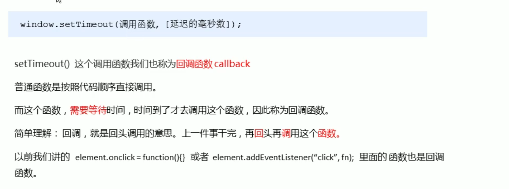
案例
五秒后关闭广告
停止定时器

setInterval()方法
和setTimeout不同的是setInterval是不死的定时器，每隔固定时间总是会调用回调函数的。

案例

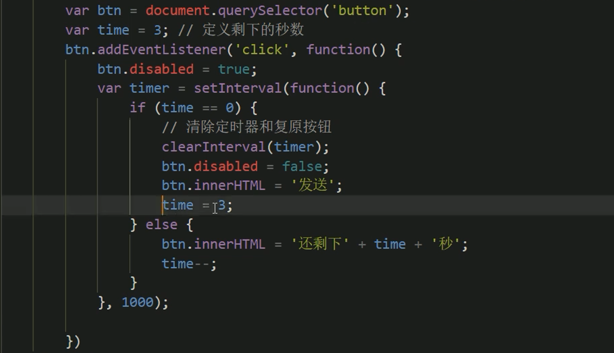
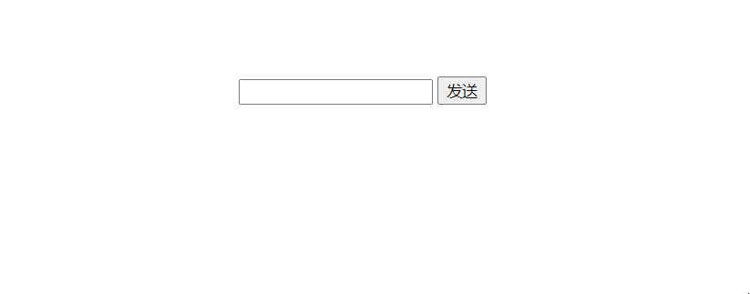
xxxxxxxxxx471<html lang="zh-CN">34 <head>5 <meta charset="UTF-8">6 <meta http-equiv="X-UA-Compatible" content="IE=edge">7 <meta name="viewport" content="width=device-width, initial-scale=1.0">8 <title>Document</title>9 <style>10 div {11 width: 300px;12 margin: 100px auto;13 }14 </style>15 </head>1617 <body>18 <div>19 <input type="number"> <button>发送</button>20 </div>21 <script>22 // function callback() {23 // console.log("世界你好");24 // }25 // setTimeout(callback, 2000);26 let time = 3;27 let btn = document.querySelector('button');28 btn.addEventListener('click', function() {29 btn.disabled = true;30 btn.innerHTML = '还剩下'+time+'秒';31 let timer = setInterval(function() {32 if (time==0){33 // 重新恢复34 btn.disabled = false;35 btn.innerHTML = "发送";36 time =3;37 clearInterval(timer);38 }else {39 time--;40 btn.innerHTML = '还剩下'+time+'秒';41 }42 }, 1000);43 });44 </script>45 </body>4647</html>this的指向问题
一般情况下，this指向的是调用者
1. 全局作用域下或者普通函数中的this指向全局对象window，注意定时器里面的this也是指向window的。

2. 方法调用中的this指向谁？
指向调用者

3. 构造函数中的this指向谁？
指向创建的实例 Fun就是构造函数。

JavaScript单线程

同步和异步

同步任务和异步任务
同步任务一般放在猪线程上执行，形成一个执行栈
异步任务通常包含有三个类型
- 普通时间 如click，resize等
- 资源加载 如 load，error等
- 定时器 包括 setInterval 和 setTimeout等
异步任务相关回调函数添加到任务队列中，任务队列也称为消息队列。

执行机制
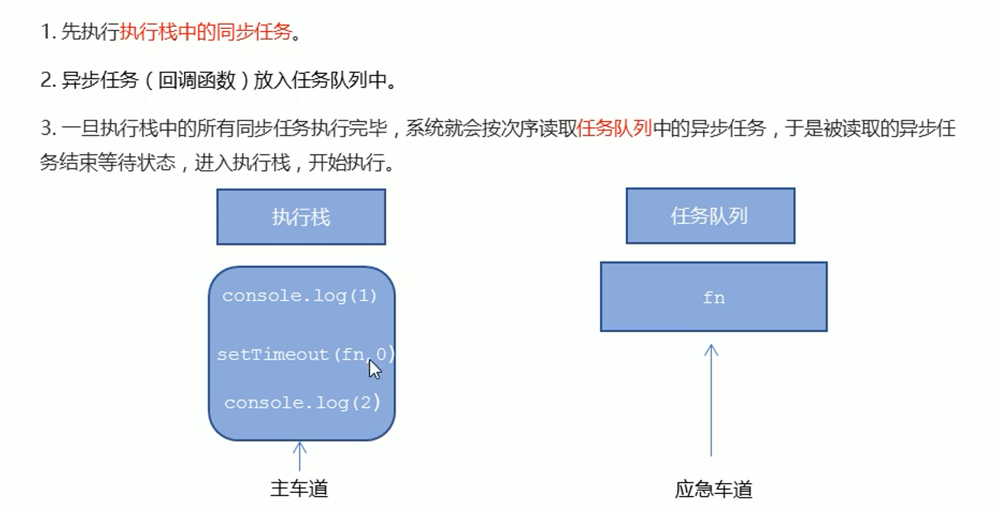
简单的理解就是无论多后面都是先执行的，执行完同步任务后，执行器减去检查异步任务队列，如果有那么将异步任务放入执行栈中，然后执行。
异步任务是通过异步进程写入到任务队列中的，有些需要点击才能响应的异步任务，如果没有点击，那么异步进程不会将这个异步任务放入异步任务队列中，定时器也是如此，如果定时器的定时事件还没有到，那么累异步进程不会将定时器的异步任务放在异步任务队列中。
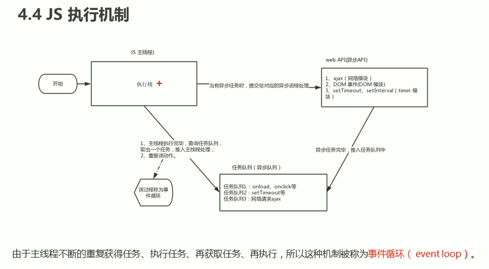
location对象 重要
URL
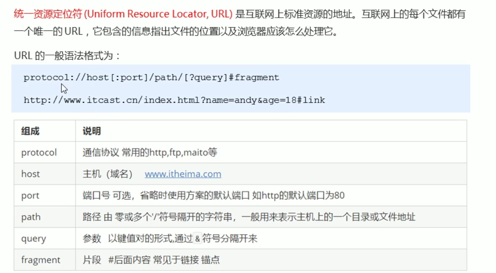
location常见属性
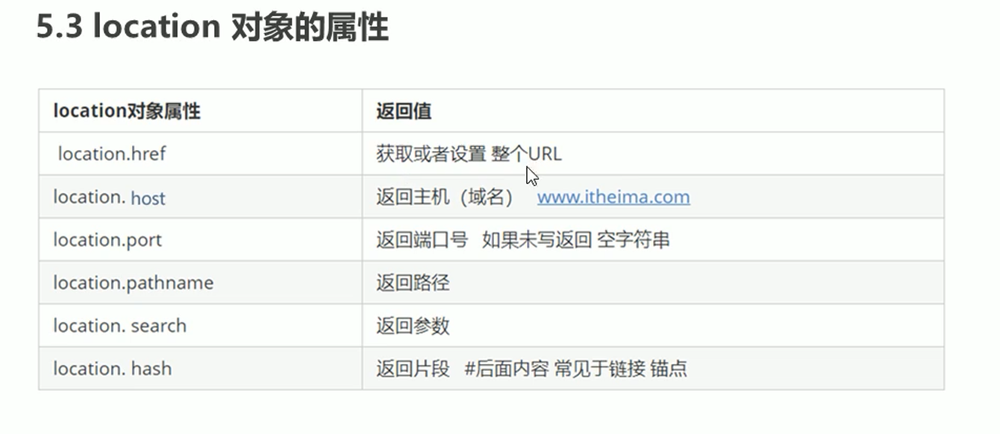
需要记住的是href和host和search这几个比较常用。
search返回的是url中的参数
localtion对象方法
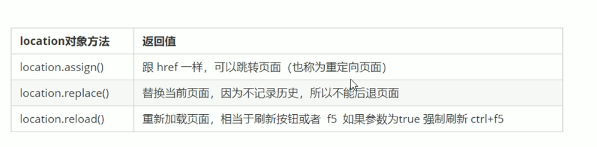
navigator对象 重要
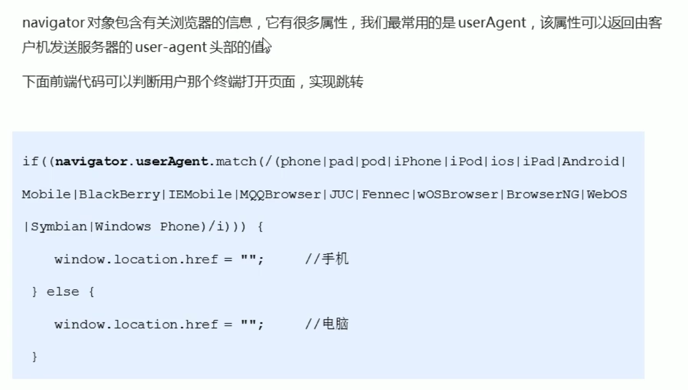
history对象 重要 OA系统

offset对象
offset对象可以帮助我们动态的获取元素的位置即便宜大小等。获取的是以带有定位的父亲为准，如果没有带有定位的父级（各种上级）那么以body为准。返回的数值都不带单位。同时可以返回带有定位的父级元素，如果没有带有定位的父级元素（爷爷级）那么直接返回的是body的标签，上面返回的数值也是距离body的数值。

区别

案例
offset计算鼠标在盒子内的哪个位置
计算流程是
- 先算盒子的位置，使用offset得到距离左边和上边的位置
- 然后使用系统自动创建的事件对象event，使用事件对象的属性 pageX或者是client这两个属性，计算出点击的位置
- 最后点击的位置减去盒子的位置就是鼠标在盒子中的位置了，这个可以用来做淘宝，天猫中的商品中的放大镜效果。

更重要的案例
网页元素的拖拽效果

client对象

scroll对象

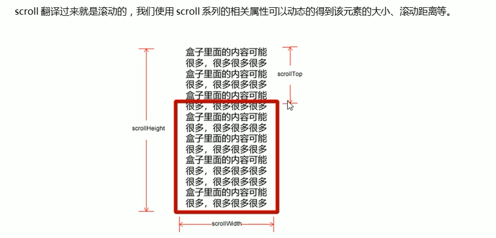
常用的是scrollTop和scrollLeft，常用来做侧边栏
总结三大系列
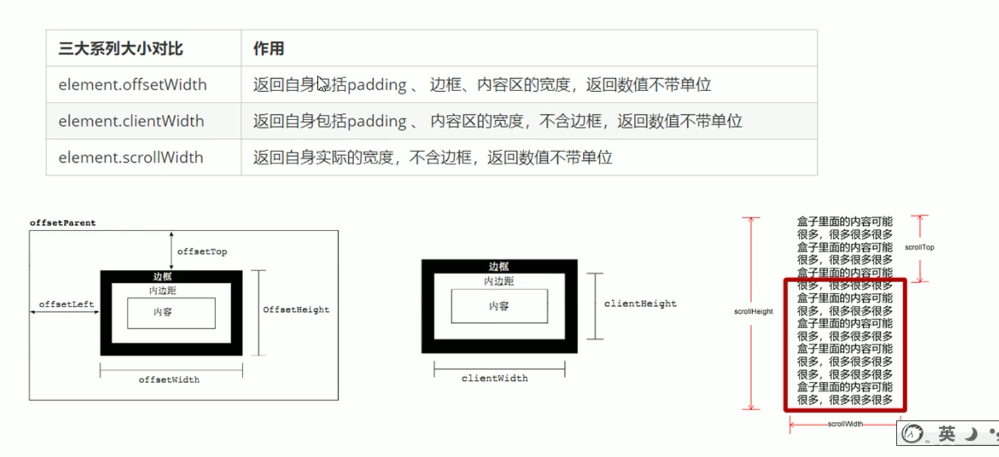

立即执行函数的写法
写法


mouseenter和mousemove
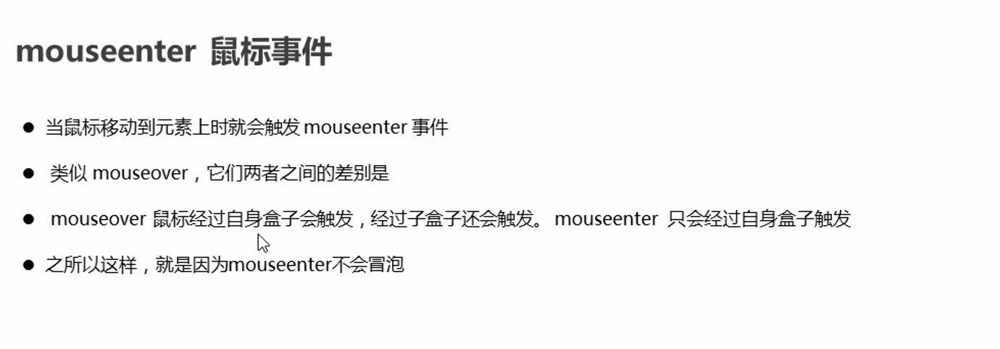
动画
动画原理
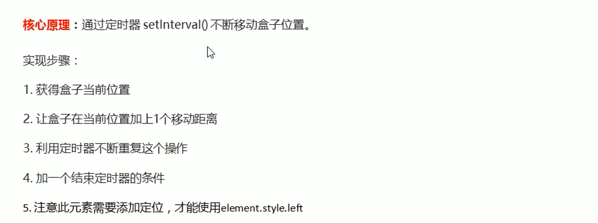
动画对象生成性能

如果给封装的动画函数加上一个属性的指定，那么动画的对象只有一个，所有的元素公用的是同一个对象，因为js的对象属性指向的就是默认生成的动画对象。
缓动画
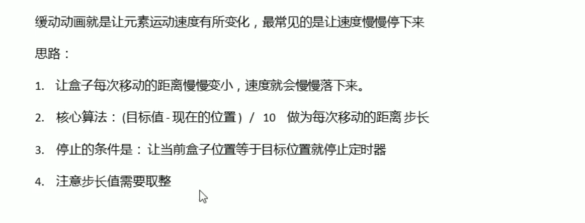